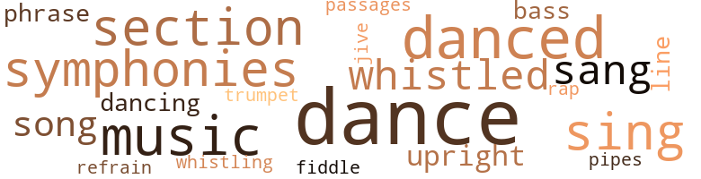
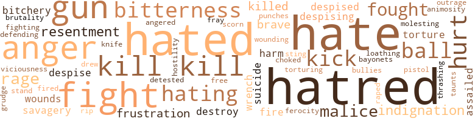

Anger at Innocence, by Smith, William Gardner (1950)
79 music-related terms matched in this text.
Most frequent terms in this topic: dance (15); danced (8); music (7); sing (6); symphonies (6)
bass.n.07
Definition: the member with the lowest range of a family of musical instruments
| word | sentence |
|---|---|
| bass | Then she turned the corner of the street and ran into the vesti - bule of the tenement house and closed the door and looked out , breathless , her heart sounding , to her , like a bass drum . |
| bass | At the back of the basement cafe three Negroes played piano , bass fiddle and drum and a Negro woman in a long , sleek black dress sang low and soft as the veiled lights shone over the tables and against the blue smoke which rose , floated and twisted in the room . |
cornet.n.01
Definition: a brass musical instrument with a brilliant tone; has a narrow tube and a flared bell and is played by means of valves
| word | sentence |
|---|---|
| trumpet | Remember it , it ai n't no joke : Blow ye the trumpet in Zion , and sound an alarm in my holy mountain : let all the inhabi - tants of the land tremble : for the day of the Lord cometh , for it is nigh at hand . |
dance.n.01
Definition: an artistic form of nonverbal communication
| word | sentence |
|---|---|
| dance | She watched the shadows dance . |
| dance | " You still dance , Bill ? " she asked . |
| dance | Why did leaves dance so on her wall ? |
| dances | He asked her to go out with him to movies and dances , and she said that if he was game she was too . |
| dance | One night he took Reety to a dance at the Strand and every - thing seemed great . |
dance.v.03
Definition: skip, leap, or move up and down or sideways
| word | sentence |
|---|---|
| danced | They danced and laughed and leaped and sang . |
| dance | Suddenly it seemed that everyone was naked ; but the people continued to dance and sing and play , ignor - ing their nakedness . |
| danced | Mrs. Baleza shouted , " put on some clothes , " and Adam , eating the apple , did so while everyone laughed until suddenly the dark clouds formed and burst overhead and the storm broke and the wind rose , whipping them while they danced and sang , and streaks of lightning shot across the sky and boulders fell and ashes fell and the sky turned black as ink and everyone continued to dance and sing while Mrs. Baleza shouted , " Put some clothes on , put some clothes on ! " |
| dance | Mrs. Baleza shouted , " put on some clothes , " and Adam , eating the apple , did so while everyone laughed until suddenly the dark clouds formed and burst overhead and the storm broke and the wind rose , whipping them while they danced and sang , and streaks of lightning shot across the sky and boulders fell and ashes fell and the sky turned black as ink and everyone continued to dance and sing while Mrs. Baleza shouted , " Put some clothes on , put some clothes on ! " |
| danced | The wind blew through the trees outside the window , and shadows of the leaves swayed and danced and merged on the walls . |
| dancing | There had been nights like this in her childhood : the nights after her mother 's words , lying in bed , the evil leaves dancing like spirits on the wall , she taut inside , straining , like a coiled spring . |
| dance | Her terrified eyes watched the leaves dance wildly on the wall . |
| danced | There was the simple fact that he would cut a ridiculous figure in the arena - he could see himself , movements awkward , joints practically creaking , while Hucks danced around , toying with him before the kill . |
| dance | Evil spirits used to dance sometimes in the night . |
| danced | They would lie there in the dark room where leaves danced on the wall when the moon was out , and hear the faint mur - mur of voices from the tearoom downstairs . |
| dance | At the corner , she saw the old taproom where the men used to dance with her sometimes . |
| danced | He shoved a nickel in the juke box and they danced , jitter - bugging . |
| danced | They danced again , and then she had another drink . |
| dance | At night there would be moonlight or light from the street lamp and the leaves would sigh and their shadows would sway and dance on the walls and she would be frightened . |
| dancing | They were so shadowy , like ghosts , like black spirits dancing on the wall . |
| danced | Even when she was a little girl , a bad little girl , the leaves always danced on her wall when she had gone to bed . |
| dance | Nobody asked her to dance tonight . |
| dance | Funny ; every other time they asked her to dance . |
| dance | " How come nobody asked me to dance ? " |
| dance | " Baby , you ai n't supposed to dance when your mother 's dead . " |
| dance | She would drink with them occasionally ; sometimes she would dance . |
music.n.01
Definition: an artistic form of auditory communication incorporating instrumental or vocal tones in a structured and continuous manner
| word | sentence |
|---|---|
| music | He sipped his beer and listened to the music from the radio behind the bar . |
| music | He said , " It was a nice concert , except the music was n't the kind I really like best , you know . |
| music | He said , " Well , I like that classical music better than this stuff we heard there at the concert . |
| music | I mean , what we heard was nice , but I like the classical music better . " |
| music | I 've got quite a collection - operas , symphonies , chamber music . |
| music | " I like all kinds of classical music , espe - cially symphonies . |
| music | How are you ? " she asked him , music in her voice . |
passage.n.06
Definition: a short section of a musical composition
| word | sentence |
|---|---|
| passages | She felt nothing wrong with all this at first , but others had told her it was wrong , and her mother had read her passages from the Bible . |
phrase.n.02
Definition: a short musical passage
| word | sentence |
|---|---|
| phrase | She wrote easily and swiftly , pausing periodically to think of a word or phrase , then resinning . |
| phrase | Rodina said softly , as though only repeating his phrase in her mind . |
pipe.n.04
Definition: a tubular wind instrument
| word | sentence |
|---|---|
| pipes | Smoke of all kinds rose in the room from cigars , cigarettes , pipes , twisting together , curling thickly , filling the lungs , at once acrid and sweet . |
rap.n.05
Definition: genre of African-American music of the 1980s and 1990s in which rhyming lyrics are chanted to a musical accompaniment; several forms of rap have emerged
| word | sentence |
|---|---|
| rap | There was a rap on the door . |
refrain.n.01
Definition: the part of a song where a soloist is joined by a group of singers
| word | sentence |
|---|---|
| refrain | Like a song 's refrain , the conviction rang in Ro - dina : " Recause of me , because of me . " |
section.n.01
Definition: a self-contained part of a larger composition (written or musical)
| word | sentence |
|---|---|
| section | There is South Street , the avenue of the Negro ghetto ; there is Snyder Avenue , main stem of the Italian and Jewish sections ; there is the east section with Poles and delicatessens and Jewish bakeries out of Palestine ; there is Grays Ferry with the Irish , where strangers once dared not walk . |
| section | He knew this section well . |
| section | She lived in another section of town . |
| section | Hucks took himself a room in a tenement house in a differ - ent section of South Philly , and right away met a cute little bitch named Rodina Baleza . |
| section | Presently she was away from her section of town and in a part of the city which was clean , fresh and attractive . |
| section | When the sun had passed overhead and the trenchant heat of afternoon assailed the city , she found herself in the north - east section of the town . |
sing.v.02
Definition: produce tones with the voice
| word | sentence |
|---|---|
| sing | I could be free and sing if I knew your final words of love were lies , your final tears were false . |
| sing | " The rain and the wind make the trees sing . " |
| sang | They danced and laughed and leaped and sang . |
| sing | Suddenly it seemed that everyone was naked ; but the people continued to dance and sing and play , ignor - ing their nakedness . |
| sang | Mrs. Baleza shouted , " put on some clothes , " and Adam , eating the apple , did so while everyone laughed until suddenly the dark clouds formed and burst overhead and the storm broke and the wind rose , whipping them while they danced and sang , and streaks of lightning shot across the sky and boulders fell and ashes fell and the sky turned black as ink and everyone continued to dance and sing while Mrs. Baleza shouted , " Put some clothes on , put some clothes on ! " |
| sing | Mrs. Baleza shouted , " put on some clothes , " and Adam , eating the apple , did so while everyone laughed until suddenly the dark clouds formed and burst overhead and the storm broke and the wind rose , whipping them while they danced and sang , and streaks of lightning shot across the sky and boulders fell and ashes fell and the sky turned black as ink and everyone continued to dance and sing while Mrs. Baleza shouted , " Put some clothes on , put some clothes on ! " |
| sing | Church bells rang and pastors preached special Christmas sermons over the radio and choirs were imported from other cities to sing Christmas carols . |
| sang | At the back of the basement cafe three Negroes played piano , bass fiddle and drum and a Negro woman in a long , sleek black dress sang low and soft as the veiled lights shone over the tables and against the blue smoke which rose , floated and twisted in the room . |
| sang | The woman sang softly the blues . |
| sing | She started to sing . |
song.n.01
Definition: a short musical composition with words
| word | sentence |
|---|---|
| song | He heard the song . |
| song | Like a song 's refrain , the conviction rang in Ro - dina : " Recause of me , because of me . " |
| song | The sound has a strange effect on me : something like hearing a half-forgotten song , made precious by a long - ago event . |
swing.n.05
Definition: a style of jazz played by big bands popular in the 1930s; flowing rhythms but less complex than later styles of jazz
| word | sentence |
|---|---|
| jive | We ai n't used to goin ' through a lot of jive first . |
symphony.n.01
Definition: a long and complex sonata for symphony orchestra
| word | sentence |
|---|---|
| symphonies | I 've got quite a collection - operas , symphonies , chamber music . |
| symphonies | I have his Quintet in G , the Violin Concerto in A Major , and a whole slew of his symphonies . " |
| symphonies | " Gee , I did n't know you liked symphonies , Hucks , " Barbara said . |
| symphonies | " I like all kinds of classical music , espe - cially symphonies . |
| symphonies | Some of my buddies and I argue over which of his symphonies is the best . |
| symphonies | About hearing all of Mozarts symphonies . |
tune.n.01
Definition: a succession of notes forming a distinctive sequence
| word | sentence |
|---|---|
| line | She said , " Do n't worry about me , I ai n't failin ' for that old line . |
| line | Rodina 's mouth closed in a straight line , she stared at Hucks hotly . |
upright.n.02
Definition: a piano with a vertical sounding board
| word | sentence |
|---|---|
| upright | She sat upright . |
| upright | She awoke to the sound of a woman 's cry , and sat upright in bed . |
| upright | She sat upright in the bed , wide awake , and looked around her , then through the window at the clear blue sky . |
violin.n.01
Definition: bowed stringed instrument that is the highest member of the violin family; this instrument has four strings and a hollow body and an unfretted fingerboard and is played with a bow
| word | sentence |
|---|---|
| fiddle | At the back of the basement cafe three Negroes played piano , bass fiddle and drum and a Negro woman in a long , sleek black dress sang low and soft as the veiled lights shone over the tables and against the blue smoke which rose , floated and twisted in the room . |
whistle.v.01
Definition: make whistling sounds
| word | sentence |
|---|---|
| whistled | She passed a few people on the street ; once , a fellow whistled at her . |
| whistling | He used to come in here whistling . |
| whistled | When , later , Rodina left the tearoom and walked down the street the kids playing ball waved and whistled at her . |
| whistled | She looked at the kids - there was a sad - ness because they no longer waved , no longer whistled : they were looking for the old Rodina , the Rodina of the dancing skirts . |
| whistled | He whistled . |
316 violence-related terms matched in this text.
Most frequent terms in this topic: hatred (35); hated (30); hate (30); kill (20); gun (15)
abhorrence.n.01
Definition: hate coupled with disgust
| word | sentence |
|---|---|
| loathing | Rut a part of him was filled with loathing of himself . |
affray.n.02
Definition: a noisy fight
| word | sentence |
|---|---|
| fray | Was it not nimbleness of brain , the habit of thinking and weighing and self-analyzing , which led one , in the face of a challenge , to weigh all consequences of one 's reply ( thereby hesitating ) , while another fellow , the stupid man , the man who did not think , acted on the emotion of the moment , rage or outrage , charging into the fray ? |
anger.n.01
Definition: a strong emotion; a feeling that is oriented toward some real or supposed grievance
| word | sentence |
|---|---|
| anger | Guilt and anger , like waves of electricity , ran through him . |
| Anger | Anger because she dismissed its possibility . |
| anger | Then sud - denly all anger and indignation and pride left him and he lay still , afraid to move . |
| anger | His face became red and his eyes puffed with anger . |
| anger | Who knew anything about Howard better than she , who had been the sole object of his adoration since their high-school days , who had always been able to make him do anything , feel anything , with a mere lift of a brow , flash of anger , or assumed pain ? |
| anger | She looked at him across the table , in amusement and anger . |
| anger | He bit off the words and was satisfied when he saw the red flush of anger explode in Howard 's face . |
| anger | Howard rose in anger to leave . |
| anger | She had seemed sincere when in moments of anger she had shouted her hatred of Hucks . |
| anger | He looked up at her and the anger retreated from his eyes . |
| anger | He was filled with anger , staring at the brawny Hucks who moved easily , gracefully , even sitting in a chair playing cards . |
| anger | She looked at him without anger . |
| anger | He was angry , and then the anger fled and was replaced by amusement . |
| anger | Hucks said , moving toward anger . |
| anger | Hucks demanded , feeling the rising blind anger . |
anger.v.02
Definition: become angry
| word | sentence |
|---|---|
| angered | In a way she was amused , in a way angered . |
animosity.n.01
Definition: a feeling of ill will arousing active hostility
| word | sentence |
|---|---|
| animosity | Be glanced at Theodore with animosity . |
attack.v.01
Definition: launch an attack or assault on; begin hostilities or start warfare with
| word | sentence |
|---|---|
| assailed | She wanted to , but was assailed by doubts . |
| assailed | When the sun had passed overhead and the trenchant heat of afternoon assailed the city , she found herself in the north - east section of the town . |
bayonet.n.01
Definition: a knife that can be fixed to the end of a rifle and used as a weapon
| word | sentence |
|---|---|
| bayonets | " You did n't see them storm troopers in shiny black boots with bayonets through their noses , like all us other all-American boys ? " |
bitchery.n.01
Definition: aggressive remarks and behavior like that of a spiteful malicious woman
| word | sentence |
|---|---|
| bitchery | Why should her bitchery con - cern me ? |
| bitchery | What was it about her very bitchery , her very savagery , her very unconcern with morals or the social law , which made him weak and angry and brutal , filled with hatred and lust together ? |
brawl.n.02
Definition: a noisy fight in a crowd
| word | sentence |
|---|---|
| free-for-all | He had to smile as he pictured this : he , the middle-aged man , engaged in a free-for-all with the young , brawny Hucks . |
contemn.v.01
Definition: look down on with disdain
| word | sentence |
|---|---|
| despise | Already they despise their parents . |
| despised | If I knew you despised me . |
| despised | He had hated talk like this , not perceiving , in those years , the pain behind the vernacular , the misery behind the brave clothes , the hatred behind the grin he so despised . |
| despising | She lay sobbing , despising herself . |
| scorn | Rodina asked , a hint of scorn in her voice . |
| despising | Had she thought this thing , hiding it even behind those expressive eyes , really despising him ? |
| despises | She despises him . |
destroy.v.04
Definition: put (an animal) to death
| word | sentence |
|---|---|
| destroy | She should hide the letter ; she should destroy it . |
| destroy | Am I now so stupid as to try to destroy her ? |
draw.v.23
Definition: pull (a person) apart with four horses tied to his extremities, so as to execute him
| word | sentence |
|---|---|
| drew | Juarez moved from his spot by the wall and drew up a chair behind Hucks . |
ferociousness.n.01
Definition: the trait of extreme cruelty
| word | sentence |
|---|---|
| viciousness | That 's the viciousness of this world . |
| brutality | Per - haps his very coarseness , his very brutality , his very frustra - tions and hatreds , were the things which gripped her heart . |
ferocity.n.01
Definition: the property of being wild or turbulent
| word | sentence |
|---|---|
| ferocity | What struck him , dazed as he was , was the urgency and ferocity in Rodina 's voice . |
fight.n.02
Definition: the act of fighting; any contest or struggle
| word | sentence |
|---|---|
| fighting | The usual shame : the shame he felt when others talked to him about baseball or football or prize fighting . |
fight.n.05
Definition: a boxing or wrestling match
| word | sentence |
|---|---|
| fights | When times are hard there are clashes and gang fights between Negroes and Italians or Italians and Jews or Jews and Irish or Irish and Negroes . |
| fight | The boys often fought each other , and several times one or the other of them tried to start a fight with Theodore . |
| fight | That was the first fight , and there were others . |
| fight | A fight started , naturally , and Reety 's boy friend saw her with Hucks . |
| fight | When he got out of the Army , Hucks went to New York and figured he 'd get into the fight game . |
| fights | The noise , the fights , the games , the Saturday movies . |
fight.v.02
Definition: fight against or resist strongly
| word | sentence |
|---|---|
| fought | The boys often fought each other , and several times one or the other of them tried to start a fight with Theodore . |
| fight | One day , prodded beyond re - sistance , Theodore offered to fight one of the boys . |
| fight | " You want to fight me ? " |
| fight | Eventually he refused to fight ; he would bear any insult ; he would circle the block to avoid the boys ; he would do anything , endure any humility , but he would not fight . |
| fight | Eventually he refused to fight ; he would bear any insult ; he would circle the block to avoid the boys ; he would do anything , endure any humility , but he would not fight . |
| fight | Only way to fight those bastards . " |
| fight | He ca n't fight himself . |
| defending | As though he were not capable of defending himself . |
| Fight | Fight him ? |
| fought | She had been bom in this neighborhood , known only the Huckses and the Glenns , known only the primitive creatures who traveled in gangs , fought at the drop of a hat , and knew only their own code of love-making . |
| fought | They could do what they wanted , say what they wanted - they stole , cursed and fought and swore . |
| fight | Throughout his youth , when the other boys stole , he had wished he could somehow be like them - that he too could steal and curse and fight like they , and be a part of their lives , their friend . |
| fight | Saw you fight . |
| fought | He fought in the Berlin District matches and brought home the bacon . |
| fight | One picked on people who would not fight back . . . were afraid to fight back ! |
| fight | One picked on people who would not fight back . . . were afraid to fight back ! |
| fought | I fought in the last one , and I sure know what it 's like . |
| fought | Rodina who no longer fought herself . |
frustration.n.03
Definition: a feeling of annoyance at being hindered or criticized
| word | sentence |
|---|---|
| frustrations | She would not he buried under the stifling moun - tain of inhibitions and repressions and frustrations which so disturbed domestic woman . |
| frustration | " I love you , Ted , I love you ! " she whispered desperately , unrestrained , clinging to him , her nails pressing into his skin , feeling desire and frustration and confusion , the flywheel 's spinning . |
| frustration | She frowned again , and felt the frustration shoot through her heart . |
fury.n.01
Definition: a feeling of intense anger
| word | sentence |
|---|---|
| rage | Let her rage . |
| rage | She felt a sudden , savage bitterness , a rage against heaven . |
| rage | He felt with rage the varying inflections of the senseless fear inside of him . |
| rage | Was it not nimbleness of brain , the habit of thinking and weighing and self-analyzing , which led one , in the face of a challenge , to weigh all consequences of one 's reply ( thereby hesitating ) , while another fellow , the stupid man , the man who did not think , acted on the emotion of the moment , rage or outrage , charging into the fray ? |
| rage | He could feel the rage , an indigestion inside of him ; he could feel it rise , rise , rise , driving him close to insanity . |
gag.v.06
Definition: cause to retch or choke
| word | sentence |
|---|---|
| choked | Now he had reached her ; she stared at him expressionlessly , " Rodina ! " he said hoarsely , brokenly , surprisingly choked with emotion . |
grudge.n.01
Definition: a resentment strong enough to justify retaliation
| word | sentence |
|---|---|
| grudge | Theodore would go back to her , but she , Rodina , would hold no grudge , and she 'd visit them if Theodore thought it was all right . |
gun.n.01
Definition: a weapon that discharges a missile at high velocity (especially from a metal tube or barrel)
| word | sentence |
|---|---|
| gun | Rodina was ex - cited about the gun . |
| gun | Finding a gun , loaded ? " |
| gun | He put the gun back in the drawer , along with the tools , and closed it . |
| gun | " But Ted , suppose he did kill somebody with that gun . |
| gun | Rodina jumped as though a gun had gone off beside her . |
| gun | " There 's a gun in the drawer , " she said . |
| gun | The gun . |
| gun | He picked up the gun . |
| gun | The gun at the temple and the blown-out brains . |
| gun | " There 's a gun in the drawer . |
| gun | And then she saw the gun . |
| gun | He was conscious of the gun in his hand , and surprise turned to something near amusement . |
| gun | But he only smiled , looked at the gun , and then tossed it to the bed . |
| gun | With a cry of despair she sprang upon the gun ; tears flushed from her eyes . |
| gun | Screaming soundlessly , she pointed the gun at him and pulled the trigger twice . |
hate.n.01
Definition: the emotion of intense dislike; a feeling of dislike so strong that it demands action
| word | sentence |
|---|---|
| hatred | Then , even - tually , she had buried the hatred of herself and again become defiant and reckless . |
| hatreds | These were emotional hatreds ; his intellect went against them . |
| hatred | The man saw the hatred in his eyes . |
| hatred | The sailors strolled by , big-shouldered , in groups of five or six , and Juarez , watching them , felt the usual mixture of hatred and fear . |
| hatred | Then around the corner swung a police patrol car which made its way slowly through the street while the people on the steps stared sullenly and the children , interrupted in their play , stared in silent hatred . |
| hatred | More even than hatred of Hucks , Rodina felt fear . |
| hatred | The big soft man glared at her in surprise , and then turned suddenly to stare in hatred at Theodore . |
| hatred | Every time he saw Rodina smile , every time he saw her eyes opened wide in apparent innocence , every morning that , from his room , he saw her walk hand in hand down the stairs with Theodore , Juarez felt hatred seeping like hot lava through his veins . |
| hatred | Every time he saw her , he wanted to tell her of his hatred . |
| hate | She would know nothing of hate , have no need for vanity . |
| hatred | And , later , when the first of maturity brought the first of full comprehension and full hatred , the haughty Nordice of Manhattan had re - minded them on streetcars by looks or in the motion pictures by stereotypes or in employment by the type of jobs they gave them that they were Mexicans . |
| hatred | Early , when the girls at school treated him differently from the other boys , and he knew the reason why , Juarez felt the beginnings of the hatred of the Negroes . |
| hatred | He had hated talk like this , not perceiving , in those years , the pain behind the vernacular , the misery behind the brave clothes , the hatred behind the grin he so despised . |
| hatreds | And then his hatreds changed . |
| hatred | Slow hatred burned . |
| hatred | But indiscriminately , until the slow-gathering frus - trations and resentments gave birth to hatred of all who were considered normal in this country - all those who could walk with their heads up high and their smiles unrestrained by fear or bitterness . |
| hatred | Until he breathed hatred . |
| hatred | From the first , when she spoke , Juarez had listened to the usual words silently , filled with hatred . |
| hatred | Except what one had come to feel - hatred or love , or a portion of each ? |
| hatred | She had seemed sincere when in moments of anger she had shouted her hatred of Hucks . |
| hatred | All that he considered decent in him rebelled against the trend his thoughts now took ; but the thick slow hatred , unfelt for a moment , stirred again , crush - ing the protest . |
| hatred | Theodore felt that unfathomable and boundless hatred rising up within him again ; he felt , too , that maddening impotence which came because he could not decide what his reaction should he , and so did not react at all . |
| hatred | For a long moment , for an infinity , he stood staring at Hucks , noting and hating the fact that he strove mightily to keep his hatred from coming into his eyes ; for a show of hatred might lead to other things . |
| hatred | For a long moment , for an infinity , he stood staring at Hucks , noting and hating the fact that he strove mightily to keep his hatred from coming into his eyes ; for a show of hatred might lead to other things . |
| hatred | Rodina , who had said nothing through all this , but had stared in fierce hatred at Hucks , holding her tongue by supreme effort , stood partially relieved in the precise spot she had occupied since they arrived . |
| hatred | She stared at him and he could see the hatred in her eyes . |
| hatred | Theodore stared , filled with hatred . |
| hatred | Still , he could only stare his hatred . |
| hatred | But as strong as the hatred was his shame . |
| hatred | She tried to stifle the growing hatred of his wife . |
| hatred | Theodore felt the rise of hatred again . |
| hatred | Would a strong man react with such silent hatred to the other 's every smile or word ? |
| hatred | Now he did not stir , listening to them , hating them , yet realizing that this hatred was unreasonable , that he had no just cause for hating them , since neither had done anything to him . |
| hatred | He compelled hatred to rise . |
| hatred | I only know that she looks at him with hatred , that she shouts and ' swears at him , that she can not tolerate him , that she hardly speaks to him . |
| hate | Theodore did not answer and Juarez said , " You know that hate is close to love . |
| hatred | What was it about her very bitchery , her very savagery , her very unconcern with morals or the social law , which made him weak and angry and brutal , filled with hatred and lust together ? |
| hatred | He did not like this , but it was not the important thing : for this did not explain the hatred she now felt for him . |
| hatreds | Per - haps his very coarseness , his very brutality , his very frustra - tions and hatreds , were the things which gripped her heart . |
| hatred | Hearing her heart beat loudly and staring at him in hatred , not trusting him , but defiant of him , for he was an outsider . |
hate.v.01
Definition: dislike intensely; feel antipathy or aversion towards
| word | sentence |
|---|---|
| hated | She had taken jobs for short periods of time : she had quit each of them because she hated the unhealthy work in factories , or because the boss got fresh , or because she felt herself incompetent and destined to remain in one position , poor-paying , all the rest of her life . |
| hated | She hated herself for doing these things . |
| hate | Finally , he said , " Sylvia , I hate to say this . |
| hated | " I hated to hurt her . |
| hate | Already they hate the police and the law . |
| hate | Already they hate the discipline of school and work . |
| hated | He hated it all . |
| hated | He hated to think that this , between himself and Rodina , was clandestine . |
| hate | He had determined , by mental vow , not to hate Hucks . |
| hated | Juarez hated bullies ; he hated big men who made too much of their bigness . |
| hated | He hated people who called him " Mex . " |
| hate | But he tried hard not to hate Hucks . |
| detested | He had one consolation : he knew Rodina detested Hucks fully as much as he did . |
| hated | He hated the uniform . |
| hate | Juarez looked at Hucks and said , " I hate him . " |
| hating | " Well , I do n't feel much like hating any - one now . |
| hated | How he hated his brothers who went off to school and became doctors and lawyers and did n't want him to visit them . |
| hated | How much he hated his mother and father , dead , bless their bones , who were always pointing to the other kids and saying , " Why ca n't you be like them ? " |
| hated | How he hated living in this rat trap with a bunch of dopes and gossips . |
| hated | Sometimes it seemed to him that he was two people ; one was a rat , and the second was somebody who hated the first . |
| hate | I 'd hate that . " |
| hated | She hated him . |
| hate | " I hate him , " Rodina said savagely . |
| hated | He hated the word . |
| hating | She was hating him and thinking of his words : " Be seein ' you , " and knowing what he meant by them . |
| hating | There was the cop and she felt the first beat-skip of her heart as she saw the money ; there she was racing around the corner ; there she was walking and he laughed and seized her wrist and she was gone in terror , rac - ing around the corners , into the tenement , thinking , " Theodore must n't know , I must n't disappoint him , " running into Hucks , the leering Hucks , saying , " Let 's go into my room and . . . talk , " shrieking , hating him , seeing her mother 's eyes . |
| hating | Nights like this with God in the room , when she had closed her eyes and wanted to shriek ; nights seeing God in her mother 's unbending eyes , clawing at the eyes , hating them , shrieking inwardly : to hell with it all , to hell with momma and with God ! |
| hated | They hated school ; the only good thing about it was the recess ; during recess they could play squeeze the lemon , and get warm , and feel forbidden parts of the girls ' bodies . |
| hated | Those were the days when he had hated all who reminded him who he was . |
| hated | So he had hated all those who were treated as inferiors : the Jews and Negroes as well as the Mexicans . |
| hated | He had hated talk like this , not perceiving , in those years , the pain behind the vernacular , the misery behind the brave clothes , the hatred behind the grin he so despised . |
| hated | He hated them , and hated the Jews who were beaten and cowered , the Mexicans whose clothes and voices and manners were as loud as those of the Negroes . |
| hated | He hated them , and hated the Jews who were beaten and cowered , the Mexicans whose clothes and voices and manners were as loud as those of the Negroes . |
| hated | He could not love , could not embrace , the people who were as oppressed as he ; for secretly he hated them for allowing such oppression . |
| hate | But even more he learned to hate the ones who thought him differ - ent , the girls who would not consider going on dates with him , the fellows who did not consider him their equal . |
| hate | I hate him ! |
| hate | Oh , I hate him , I hate him ! " |
| hate | Oh , I hate him , I hate him ! " |
| Hate | " Hate him ? " |
| Hate | " Hate him ? |
| hate | Do you hate him , Rodina ? |
| hate | Do you really hate him ? " |
| hate | " Yes , I hate him ! |
| hate | I hate him , Juarez ! " |
| hated | At that moment he hated Hucks more than ever . |
| hated | These two made more noise than the others com - bined , it seemed to Theodore , and he hated the quality of their laughter ; loud , arrogant , the laughter of people who physically dominate a group . |
| hating | For a long moment , for an infinity , he stood staring at Hucks , noting and hating the fact that he strove mightily to keep his hatred from coming into his eyes ; for a show of hatred might lead to other things . |
| hating | Theodore looked up at Hucks a moment , hating him , and then he looked down again . |
| hating | He could only stare at the man , hating his grin and loud laugh and loud voice , while Mrs. Houston 's eyes darted eagerly from face to face , in exaggerated arcs , provocatively . |
| hates | Would a strong man , when he saw Hucks , become so full of fears and hates and trepidations ? |
| hated | Then , awake or asleep , she felt his nearness and loved him and hated the vow , the wall , and the wife who kept them apart . |
| hating | Now he did not stir , listening to them , hating them , yet realizing that this hatred was unreasonable , that he had no just cause for hating them , since neither had done anything to him . |
| hating | Now he did not stir , listening to them , hating them , yet realizing that this hatred was unreasonable , that he had no just cause for hating them , since neither had done anything to him . |
| hate | It was an effort to hate , as it was not to hate , he noted idly , " Whoa , " Juarez said gently , " hold up a moment , Rodina . |
| hate | It was an effort to hate , as it was not to hate , he noted idly , " Whoa , " Juarez said gently , " hold up a moment , Rodina . |
| hate | I hate his guts . |
| hate | " I hate it ! " she said with sudden vehemence . |
| hated | But she hated the jobs outside . |
| hated | Rodina hated both of them . |
| hate | " I hate her ! " |
| hates | " I only know , " Juarez said , " that now she says she hates him . |
| hate | " What reason has she to hate him ? |
| hated | He hated the goddamn place : it did n't look like he was making any progress . |
| hate | Why did she hate Hucks so ? |
| hate | He made advances , yes : but so did many men , and Rodina was not one who would hate them for it ! |
| hate | Why did she hate Hucks ? |
| hate | " Why do you hate Hucks so much ? " he asked her . |
| hate | " But now you hate him . " |
| hate | " Now I hate him . " |
| hated | It was obvious you hated him . |
| hated | One day she strolled pretty far from home , passing a police station , glaring at the hated cops who stood outside , passing the movie house where she had gone to see the double feature the day after meeting Theodore . |
| hated | He was anxious but , much as he hated to admit it , relieved . |
hostility.n.01
Definition: a hostile (very unfriendly) disposition
| word | sentence |
|---|---|
| hostility | " I got other babies , " he said , with hostility . |
indignation.n.01
Definition: a feeling of righteous anger
| word | sentence |
|---|---|
| indignation | Then sud - denly all anger and indignation and pride left him and he lay still , afraid to move . |
| indignation | But , so long as he is the type of person who is troubled by feelings of guilt because he left his wife , or indignation because you 've stolen or lied , you two can not know happiness . |
| indignation | He was indignant , but did not want his indignation to show : he did not want to make a fool of himself . |
| outrage | Was it not nimbleness of brain , the habit of thinking and weighing and self-analyzing , which led one , in the face of a challenge , to weigh all consequences of one 's reply ( thereby hesitating ) , while another fellow , the stupid man , the man who did not think , acted on the emotion of the moment , rage or outrage , charging into the fray ? |
| indignation | She looked at him in mock indignation . |
injury.n.01
Definition: any physical damage to the body caused by violence or accident or fracture etc.
| word | sentence |
|---|---|
| harm | Theodore frowned , but he was , in many respects , a realist ; it would do no harm if Rodina got a job . |
| harm | No harm done . |
kick_back.v.02
Definition: spring back, as from a forceful thrust
| word | sentence |
|---|---|
| Kick | " Kick him one , Rick . " |
| Kick | " Kick him one , Rick . " |
| kick | Hucks watched the kids play " kick the can . " |
| kick | Someone would kick a can . |
| kick | If one of them got back to the base before the person who was " it , " he would kick the can again and everyone got another chance to hide . |
| kick | A good person would take responsi - bility for the break-up , state that she was tired of him , kick him out so that he would feel he had no alternative but to leave . |
| kick | She would kick him out . |
| kicks | The boys would take him around the corner and give him a working over : a few punches in the face and body ; maybe a few kicks . |
| kick | The boys would pound the heels of their shoes into his face ; would kick the toes of their shoes into his groin . |
kill.v.10
Definition: cause the death of, without intention
| word | sentence |
|---|---|
| killed | " Even if Johnson killed somebody with it ? " |
| kill | " I hope he did n't kill anybody . " |
| kill | " But Ted , suppose he did kill somebody with that gun . |
| kill | In the instant Theodore had charged in again , feeling an urge to kill ; but again Hucks had seized him , held him harmlessly . |
| kill | " I 'll kill that son of a bitch ! " |
| killed | " I killed her , " Rodina said . |
| kill | As though from a great distance , she asked , " Ted , would you kill someone for me ? " |
| kill | Would you kill for me , Ted ? " |
| kill | He said , bowing now to her whim of the moment , " I do n't suppose I 'd ever think it necessary to kill anyone , regardless of the circumstances . " |
| kill | " I love you very - " " I 'd kill for you , " she said . |
| kill | " I 'd kill your wife . |
| kill | I 'd kill any - body . " |
| kill | He imagined that somehow the question of whether or not he would kill for her was bound up with her mother 's death - as though , now that her mother was dead , she was seeking someone else 's death to complement the loss she felt . |
| killed | Why did n't these bastards go soak their headsl Hucks took up boxing and nearly killed the first poor guy who faced him . |
| Kill | " Kill him , Ted ! " |
| Kill | " Kill him , Ted ! |
| Kill | Kill him ! " |
| Kill | " Kill him ! |
| Kill | Kill him ! " |
| Kill | " Kill him , Ted ! |
| kill | Ted , Ted , kill him ! " |
| kill | Theodore would not kill for her . |
| kill | He could not kill for her . |
| kill | But he could not kill . |
| Kill | " Kill him ! " |
| Kill | " Kill him ! |
| Kill | Kill him ! " she had sobbed . |
| kill | You begged me to kill him . " |
| kill | Then she added , " I knew you would n't really kill him . " |
| kill | " These whores kill their lovers every other day , or vice versa . |
| kill | I also kill helpless mothers . " |
killing.n.02
Definition: the act of terminating a life
| word | sentence |
|---|---|
| kill | There was the simple fact that he would cut a ridiculous figure in the arena - he could see himself , movements awkward , joints practically creaking , while Hucks danced around , toying with him before the kill . |
knife.n.02
Definition: a weapon with a handle and blade with a sharp point
| word | sentence |
|---|---|
| knife | All this damn stuff about propriety , all this damn stuff about you should n't do this and you should do that , and ladies must n't use that knife , was a lot of baloney , she told herself . |
malice.n.01
Definition: feeling a need to see others suffer
| word | sentence |
|---|---|
| malice | He bore no malice ; he could well understand the reasons for what she had done ; he simply wanted her to be happy and like him and , perhaps , depend on him a little . |
| malice | I realize that you did what you did only after careful thought ; that you did what you thought best for the happiness of both of us ; that there was no malice in your action . |
| malice | Even now she felt no malice ; even now she was willing to say that she was to blame . |
| malice | If she loved , she would love freely and faithfully ; if she did wrong ( according to the laws of God or man ) , she would do so innocently , without malice or cheating or deceit . |
| malice | Rodina : honest , untouched , who did what she did , right or wrong ( according to the laws of God or man ) with freedom , without malice , in innocence . |
molest.v.01
Definition: harass or assault sexually; make indecent advances to
| word | sentence |
|---|---|
| molesting | Or was the source of her discomfiture something he knew nothing about , something from her past , maybe some former lover now molesting her again ( the fear again , the hollowness , creeping hot through him ; he the champion , he the white knight , and the laughing lover looking at him , pointing at the child on horse with lance ) . |
musket_ball.n.01
Definition: a solid projectile that is shot by a musket
| word | sentence |
|---|---|
| ball | In the narrow streets where few cars come the boys chalk bases on the asphalt and toss a rubber ball which they hit with their fists and they call this baseball . |
| ball | We had a ball , did n't we ? |
| balls | The city lay under tinsel and angel hair and snow and bulbs and balls and Christmas trees . |
| ball | " Army 's a great place , " Hucks said , " full of men , y' know , and women , too , the WAC 's , nice uniforms , and boxing and foot - ball and wrestling . |
| ball | The great gelatin of sky was flavored here and there with big whipped-cream gobs of clouds , below lay the street : already children were playing ball and windows of houses were open wide . |
| ball | When she was a little girl she used to play baseball with a rubber ball in the street , bouncing the rubber ball and hitting it and running to chalked bases . |
| ball | When she was a little girl she used to play baseball with a rubber ball in the street , bouncing the rubber ball and hitting it and running to chalked bases . |
| ball | All that time spent poring over books , when he could have been out having himself a ball with the frauleins , and now he 'd flunked . |
| ball | When , later , Rodina left the tearoom and walked down the street the kids playing ball waved and whistled at her . |
open_fire.v.01
Definition: start firing a weapon
| word | sentence |
|---|---|
| fire | They own everything , so if they fire you then you and your kids starve , see . |
| fire | Then if you go crazy with hunger after they fire you , or maybe just get tired slavin ' in their damn sweatshops , they got the cops on their side to lock you up if you go out and steal . " |
| fired | I was fired from mine , as you know , because I was too frequently absent because of illness . |
pain.v.02
Definition: cause emotional anguish or make miserable
| word | sentence |
|---|---|
| hurt | He was so easily offended , so easily hurt . |
| hurt | So afraid he 'll hurt my feelings . |
| hurt | " Oh , do n't hurt him , Howard . |
| hurt | That he was sorry he had hurt her . |
| hurt | I know he does n't want to hurt me , but I can see he 's not happy . " |
| hurt | He was hurt . |
| hurt | She did not want to hurt him , or make him angry . |
| hurt | She was about to speak , to retract whatever she had said that had hurt him , when the knock came at the door . |
| hurt | He thought maybe she was hurt by his tone . |
| hurt | He wanted to know if she was hurt , she imagined . |
| hurt | Well , she was not hurt . |
pistol.n.01
Definition: a firearm that is held and fired with one hand
| word | sentence |
|---|---|
| pistol | Ringing through the air from a distance of perhaps two blocks came a sound like a pistol shot ; two spinsters exchanged glances and one of them laughed , " Bet ole Jeff shot that cheatin ' wife of his ' n. " Mighty warm for November , somebody commented ; it 'd prob - ably be a warm winter . |
punch.n.01
Definition: (boxing) a blow with the fist
| word | sentence |
|---|---|
| punches | The boys would take him around the corner and give him a working over : a few punches in the face and body ; maybe a few kicks . |
rape.v.01
Definition: force (someone) to have sex against their will
| word | sentence |
|---|---|
| raped | She had seemed sincere in innocence , the heroine raped but unmarred - but how many other men , cheap men , vulgar men , men without compassion or the knowledge of love , had known her intimately ? |
resentment.n.01
Definition: a feeling of deep and bitter anger and ill-will
| word | sentence |
|---|---|
| bitterness | A thin wisp of bitterness , like a curl of smoke , passed through him and blew out . |
| bitterness | Like smoke his bitterness came and went ; like smoke it left its taste and odor behind on the breath , on the tongue . |
| bitterness | His eyes fell on one of the girls and the wisp of bitterness drifted through him again . |
| resentment | Yet he blamed neither of them ; it was Mr. Miller toward whom he felt a certain resentment . |
| bitterness | The light from a street lamp , shining yellow in the rain , showed a face twisted with bitterness and pain . |
| bitterness | She felt a sudden , savage bitterness , a rage against heaven . |
| bitterness | He did not answer her greet - ings , but she did not care ; his eyes were full of bitterness , but she did not notice . |
| resentments | But indiscriminately , until the slow-gathering frus - trations and resentments gave birth to hatred of all who were considered normal in this country - all those who could walk with their heads up high and their smiles unrestrained by fear or bitterness . |
| bitterness | But indiscriminately , until the slow-gathering frus - trations and resentments gave birth to hatred of all who were considered normal in this country - all those who could walk with their heads up high and their smiles unrestrained by fear or bitterness . |
| resentments | She had dreaded the strap ; but she had almost longed for the blessed hour when the beating would begin and then swiftly be done , with only the aches , resentments and self-pity to be gone through later . |
| bitterness | Nor did the epithet affect him over - much : it went clanging and clattering down the hard stone steps into the catacombs of his heart , to fester and rankle amid the bitterness there . |
| resentment | In particular , Theodore noticed with resentment the way Juarez played subtly upon his dislike and fear of Hucks . |
| bitterness | Behind the watery film , his eyes were filled with bitterness . |
resist.v.04
Definition: withstand the force of something
| word | sentence |
|---|---|
| stand | You stand up on the table and show your talents and I 'll stand up there and show mine . |
rip.v.04
Definition: criticize or abuse strongly and violently
| word | sentence |
|---|---|
| rip | He could only stare ; he could only struggle to free himself , to tear into the leering face , to rip out the eyes and smash in the nose and teeth of this man - to rip open his heart , if possible , and laugh as the face stiffened at the coming of death ! |
savageness.n.01
Definition: the property of being untamed and ferocious
| word | sentence |
|---|---|
| savagery | She held him tight , with savagery . |
| savagery | What was it about her very bitchery , her very savagery , her very unconcern with morals or the social law , which made him weak and angry and brutal , filled with hatred and lust together ? |
sting.n.03
Definition: a painful wound caused by the thrust of an insect's stinger into skin
| word | sentence |
|---|---|
| sting | The severest sting . |
strong-arm.v.02
Definition: be bossy towards
| word | sentence |
|---|---|
| bullies | Juarez hated bullies ; he hated big men who made too much of their bigness . |
suicide.n.01
Definition: the act of killing yourself
| word | sentence |
|---|---|
| suicide | This , he thought , would be a time for melodrama , for suicide . |
| suicide | Some say he went and com - mitted suicide . |
thrashing.n.01
Definition: a sound defeat
| word | sentence |
|---|---|
| thrashing | That would be worse than any mere physical thrashing . |
torment.v.01
Definition: torment emotionally or mentally
| word | sentence |
|---|---|
| torturing | Perhaps , Juarez thought , I take pleasure in torturing myself . |
| torture | The tension was worse , too , when there was uncertainty , when someone had suggested that there was the possibility of reprieve - the pain of hope added to the already unbearable torture of the waiting . |
| torture | He had made the trip to her house , as his conscience com - manded ; and yet he had been spared the torture of seeing her , talking to her , feeling renewed the acute sadness and sense of guilt . |
twit.n.02
Definition: aggravation by deriding or mocking or criticizing
| word | sentence |
|---|---|
| taunts | But Theodore kept quiet and tried to ignore their taunts and jeers . |
weather.v.01
Definition: face and withstand with courage
| word | sentence |
|---|---|
| brave | He had hated talk like this , not perceiving , in those years , the pain behind the vernacular , the misery behind the brave clothes , the hatred behind the grin he so despised . |
| brave | The letters came , one after another , laden with the melan - choly and loneliness and brave sadness of the woman who lived now alone . |
| brave | All night I 've had an overpowering desire to be sur - rounded by friends brave and true , and to spend some money on them . |
wound.n.01
Definition: an injury to living tissue (especially an injury involving a cut or break in the skin)
| word | sentence |
|---|---|
| wounds | I shrink from this and from the ugliness that courts have , the lies we both must tell , the wounds we must inflict on one another . |
| wounds | Swiftly life flowed from the wounds , like water from a basin when the stopper is removed . |
wound.n.04
Definition: the act of inflicting a wound
| word | sentence |
|---|---|
| wounding | And if he did find the strength to leave her , would not the thought of this added and unnecessary wounding of his wife make impossible even such moments of happiness as he now found , when he could forget the past , with Rodina ? |
wrench.n.01
Definition: a sharp strain on muscles or ligaments
| word | sentence |
|---|---|
| wrench | With a desperate wrench she pulled her arm free and was gone . |
| wrench | He felt the wrench at his heart . |
90 religion-related terms matched in this text.
Most frequent terms in this topic: God (22); hell (7); angel (5); Satan (5); church (4)
baptist.n.01
Definition: follower of Baptistic doctrines
| word | sentence |
|---|---|
| Baptist | Mrs. Baleza smiled , one of her rare smiles , said thank you and looked at Rodina with those sharp , deep , fiery eyes which John the Baptist must have possessed . |
bible.n.02
Definition: a book regarded as authoritative in its field
| word | sentence |
|---|---|
| Bibles | She had seen pictures , illustrations , painted for books and Bibles . |
catholic.n.01
Definition: a member of a Catholic church
| word | sentence |
|---|---|
| Catholics | And the Irish Catholics and tough Italians of the neighborhood had reminded them with sticks and stones that they were Mexicans . |
church.n.02
Definition: a place for public (especially Christian) worship
| word | sentence |
|---|---|
| church | " I do n't go to church every Sunday , if that 's what you mean . " |
| church | " Mr. Hall , " Mrs. Baleza said , still leaning forward , " I do n't go to church every Sunday either . |
| church | She did n't go to church . |
| church | Some church groups gave performances of Dickens ' " A Christmas Carol " Negro preachers went to white churches and white preachers went to Negro churches and every kind of preacher went to the Jewish Synagogues to speak on Brotherhood . |
| churches | Some church groups gave performances of Dickens ' " A Christmas Carol " Negro preachers went to white churches and white preachers went to Negro churches and every kind of preacher went to the Jewish Synagogues to speak on Brotherhood . |
| churches | Some church groups gave performances of Dickens ' " A Christmas Carol " Negro preachers went to white churches and white preachers went to Negro churches and every kind of preacher went to the Jewish Synagogues to speak on Brotherhood . |
church.n.04
Definition: the body of people who attend or belong to a particular local church
| word | sentence |
|---|---|
| Church | Church bells rang and pastors preached special Christmas sermons over the radio and choirs were imported from other cities to sing Christmas carols . |
curate.n.01
Definition: a person authorized to conduct religious worship
| word | sentence |
|---|---|
| pastors | Church bells rang and pastors preached special Christmas sermons over the radio and choirs were imported from other cities to sing Christmas carols . |
eden.n.01
Definition: any place of complete bliss and delight and peace
| word | sentence |
|---|---|
| heaven | She felt a sudden , savage bitterness , a rage against heaven . |
| heavens | And all through these years , as through the years before , he was haunted by the legend , by the image , painted on the street corners , of joys , of wild climbings through the heavens roof . |
| heaven | What was that her mother had used to tell her about the man who sinned and went into hell and then begged a man in heaven for a drop of water for his tongue , just a drop , just one drop ? |
| Heaven | " Father up in Heaven , " Mrs. Baleza said , " me sick down here . |
god.n.03
Definition: a man of such superior qualities that he seems like a deity to other people
| word | sentence |
|---|---|
| God | Or so help me God you 'll go to jail . " |
| God | God willing , I 'll make her my wife . |
| God | God willing , I 'll make her more happy than you ever could ! " |
| God | God knows I tried to run him out . |
| God | Well , God 's will , Gods will . |
| Gods | Well , God 's will , Gods will . |
| God | Do n't question the will of God . |
| God | " Them 's the kinda people really evil , God knows . |
| God | Nights like this with God in the room , when she had closed her eyes and wanted to shriek ; nights seeing God in her mother 's unbending eyes , clawing at the eyes , hating them , shrieking inwardly : to hell with it all , to hell with momma and with God ! |
| God | Nights like this with God in the room , when she had closed her eyes and wanted to shriek ; nights seeing God in her mother 's unbending eyes , clawing at the eyes , hating them , shrieking inwardly : to hell with it all , to hell with momma and with God ! |
| God | Nights like this with God in the room , when she had closed her eyes and wanted to shriek ; nights seeing God in her mother 's unbending eyes , clawing at the eyes , hating them , shrieking inwardly : to hell with it all , to hell with momma and with God ! |
| Gods | There must be a reason for it ; her mother said there was always a reason to Gods works . |
| God | Before this he had been married to a woman who was cultured , composed , a church-goer ; now he lived with a woman whose grammar was bad , who did not know how to act in public , who defied and sometimes slandered Almighty God . |
| God | If she loved , she would love freely and faithfully ; if she did wrong ( according to the laws of God or man ) , she would do so innocently , without malice or cheating or deceit . |
| God | Rodina : honest , untouched , who did what she did , right or wrong ( according to the laws of God or man ) with freedom , without malice , in innocence . |
| God | Theodore was like God , so good ; he loved her , he said he did , but there was the wall . |
| God | Sometimes I thank God lie 's dead . " |
| God | God saw all , the past and the future , and when you were bom He knew whether you would be good or evil . |
| God | God was too good just to permit you to be born , knowing you were going to hell , unless He intended for you to go there . |
| God | Better not to wonder - no one could question God . |
| god | That god - damned Hucks ! |
| God | Do n't you feel closer to me , more like me , less like an Angel or like God ? |
| God | Her mother was like God . |
| God | " God has taken her away . " |
| God | " Is God the one who willed your mother dead ? " |
| god | All that god - damned time wasted , they said . |
godhead.n.01
Definition: terms referring to the Judeo-Christian God
| word | sentence |
|---|---|
| Almighty | Before this he had been married to a woman who was cultured , composed , a church-goer ; now he lived with a woman whose grammar was bad , who did not know how to act in public , who defied and sometimes slandered Almighty God . |
hell.n.01
Definition: any place of pain and turmoil
| word | sentence |
|---|---|
| hell | " Bet you boil like hell up there , him heatin ' the hell outa you , eh ? " |
| hell | Nights like this with God in the room , when she had closed her eyes and wanted to shriek ; nights seeing God in her mother 's unbending eyes , clawing at the eyes , hating them , shrieking inwardly : to hell with it all , to hell with momma and with God ! |
| hell | Nights like this with God in the room , when she had closed her eyes and wanted to shriek ; nights seeing God in her mother 's unbending eyes , clawing at the eyes , hating them , shrieking inwardly : to hell with it all , to hell with momma and with God ! |
| hell | What the hell was this ? |
| hell | I want to live with him for the rest of my life , and to hell with everything else . " |
| hell | What was that her mother had used to tell her about the man who sinned and went into hell and then begged a man in heaven for a drop of water for his tongue , just a drop , just one drop ? |
| hell | He liked her , and to hell with her damned other boy friend . |
imitation.n.01
Definition: the doctrine that representations of nature or human behavior should be accurate imitations
| word | sentence |
|---|---|
| imitation | He towered high above Juarez ; his shoulders were square and made Juarez look like an imitation of a man . |
jesus.n.01
Definition: a teacher and prophet born in Bethlehem and active in Nazareth; his life and sermons form the basis for Christianity (circa 4 BC - AD 29)
| word | sentence |
|---|---|
| Jesus | " Well , Jesus Christ ! |
jew.n.01
Definition: a person belonging to the worldwide group claiming descent from Jacob (or converted to it) and connected by cultural or religious ties
| word | sentence |
|---|---|
| Jews | When times are hard there are clashes and gang fights between Negroes and Italians or Italians and Jews or Jews and Irish or Irish and Negroes . |
| Jews | When times are hard there are clashes and gang fights between Negroes and Italians or Italians and Jews or Jews and Irish or Irish and Negroes . |
| Jews | So he had hated all those who were treated as inferiors : the Jews and Negroes as well as the Mexicans . |
| Jews | He hated them , and hated the Jews who were beaten and cowered , the Mexicans whose clothes and voices and manners were as loud as those of the Negroes . |
messiah.n.01
Definition: any expected deliverer
| word | sentence |
|---|---|
| Christ | The holly , the trees , the lights bring back so many things to me - our first Christ - mas together , friends around the tree , presents , roast turkey , wine , church , laughter , good feelings . |
| Christ | Christ died to save us . |
| Christ | A small group , six , sat around the table in the center of the linoleum-covered floor , playing cards , while the rest , at least eight or nine , shuffled around , peeking at the cards , pouring wine from the gallon jugs Mrs. Houston had bought ( she could afford this gesture once a year , on Christ - mas , someone remarked , since she supported herself on ' cuts ' from the poker games which were constantly in progress in her room ) . |
| Christ | " Well , Jesus Christ ! |
praise.n.02
Definition: offering words of homage as an act of worship
| word | sentence |
|---|---|
| praise | Them 's the kinda people gon na burn forever , praise God , in the fires of hell . |
prayer.n.01
Definition: the act of communicating with a deity (especially as a petition or in adoration or contrition or thanksgiving)
| word | sentence |
|---|---|
| prayer | And perhaps not ( the weary hope , the tired prayer ) . |
preacher.n.01
Definition: someone whose occupation is preaching the gospel
| word | sentence |
|---|---|
| preacher | Her father had died when she was very young ; he was a preacher , and she did not remember ever having seen him . |
| preacher | My husband was a preacher , Mr. Hall . |
| preachers | Some church groups gave performances of Dickens ' " A Christmas Carol " Negro preachers went to white churches and white preachers went to Negro churches and every kind of preacher went to the Jewish Synagogues to speak on Brotherhood . |
| preachers | Some church groups gave performances of Dickens ' " A Christmas Carol " Negro preachers went to white churches and white preachers went to Negro churches and every kind of preacher went to the Jewish Synagogues to speak on Brotherhood . |
| preacher | Some church groups gave performances of Dickens ' " A Christmas Carol " Negro preachers went to white churches and white preachers went to Negro churches and every kind of preacher went to the Jewish Synagogues to speak on Brotherhood . |
| preacher | Him a preacher and you his daughter . |
religion.n.01
Definition: a strong belief in a supernatural power or powers that control human destiny
| word | sentence |
|---|---|
| faith | That I did not display suffi - cient faith in your capabilities . |
saint.n.02
Definition: person of exceptional holiness
| word | sentence |
|---|---|
| angel | Been com - parin ' you with some women I know , makes you look like a angel . |
| angel | And an angel could not long love Satan . |
| Angel | " Satan could not wed an Angel . |
| angel | The city lay under tinsel and angel hair and snow and bulbs and balls and Christmas trees . |
| angel | He was an angel . |
| Angel | Do n't you feel closer to me , more like me , less like an Angel or like God ? |
| angel | " She 's so sweet ; such an angel . " |
| Angels | But so were Angels . |
satan.n.01
Definition: (Judeo-Christian and Islamic religions) chief spirit of evil and adversary of God; tempter of mankind; master of Hell
| word | sentence |
|---|---|
| Satan | Satan in that girl . |
| Satan | And an angel could not long love Satan . |
| Satan | " Satan could not wed an Angel . |
| Satan | You 're the daughter of Satan ! " |
| Satan | She had seen the dark , jagged twisting body-souls with fiery red eyes and arms and legs like twigs screaming in Satan 's cauldron . |
| devils | How presumptuous he had been , in his intellectual vanity , to think himself a match for the devils which had full play inside of her ! |
sermon.n.02
Definition: a moralistic rebuke
| word | sentence |
|---|---|
| sermons | Church bells rang and pastors preached special Christmas sermons over the radio and choirs were imported from other cities to sing Christmas carols . |
| sermons | Usta preach special kinds of sermons on Christmas . |
sin.n.06
Definition: violent and excited activity
| word | sentence |
|---|---|
| sins | Every - body sins some . |
synagogue.n.01
Definition: (Judaism) the place of worship for a Jewish congregation
| word | sentence |
|---|---|
| Synagogues | Some church groups gave performances of Dickens ' " A Christmas Carol " Negro preachers went to white churches and white preachers went to Negro churches and every kind of preacher went to the Jewish Synagogues to speak on Brotherhood . |
temple.n.03
Definition: an edifice devoted to special or exalted purposes
| word | sentence |
|---|---|
| temple | The gun at the temple and the blown-out brains . |
worship.n.01
Definition: the activity of worshipping
| word | sentence |
|---|---|
| worship | A man could worship such a woman ( Juarez thought , as a romantic young man ) until death . |
worship.n.02
Definition: a feeling of profound love and admiration
| word | sentence |
|---|---|
| adoration | Who knew anything about Howard better than she , who had been the sole object of his adoration since their high-school days , who had always been able to make him do anything , feel anything , with a mere lift of a brow , flash of anger , or assumed pain ? |
worship.v.02
Definition: show devotion to (a deity)
| word | sentence |
|---|---|
| worshiped | After a time , he had come to believe that Sylvia alone knew and understood him ; he worshiped her , and would do anything for her . |